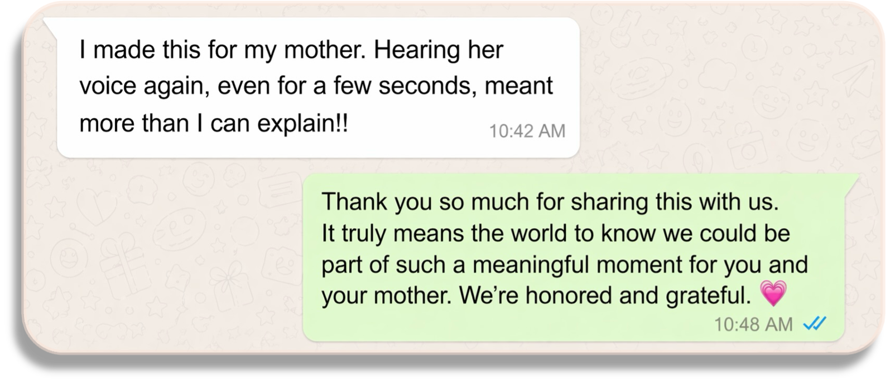
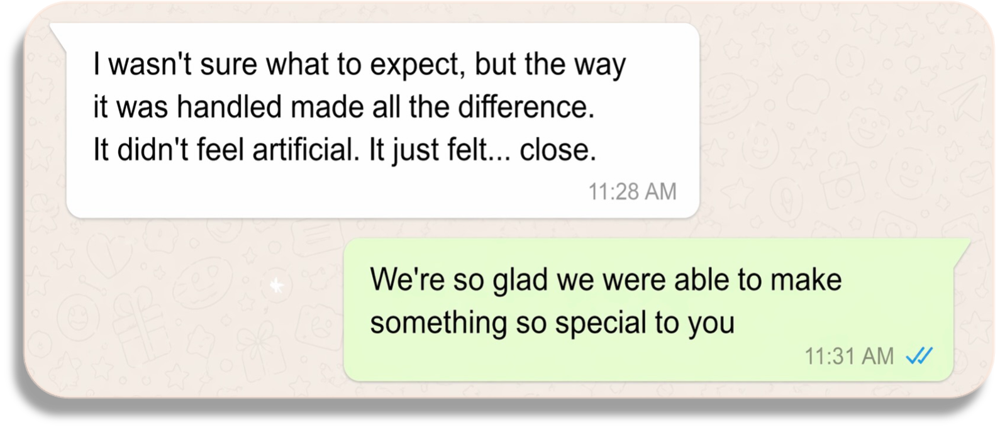
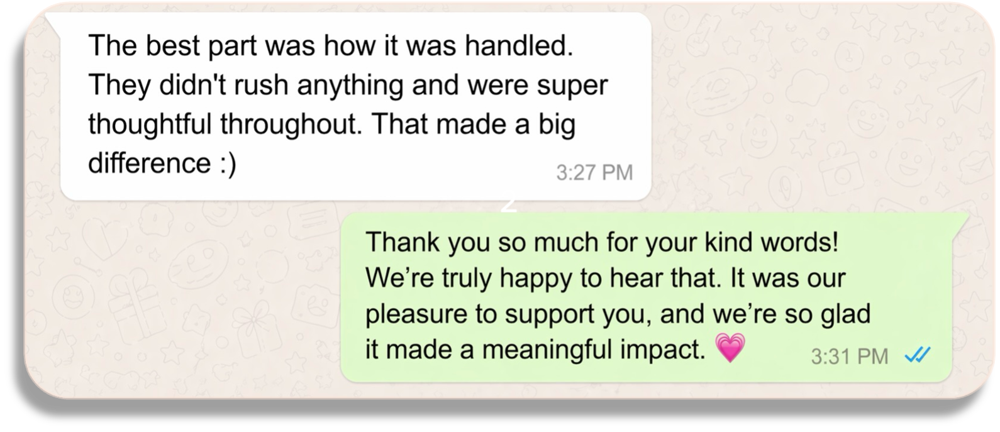
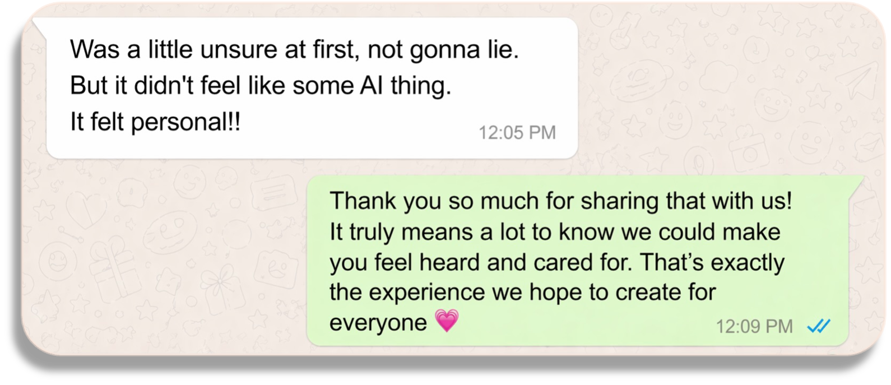
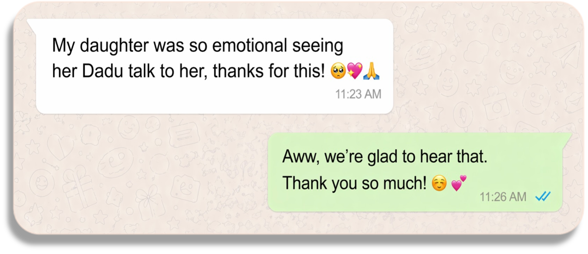
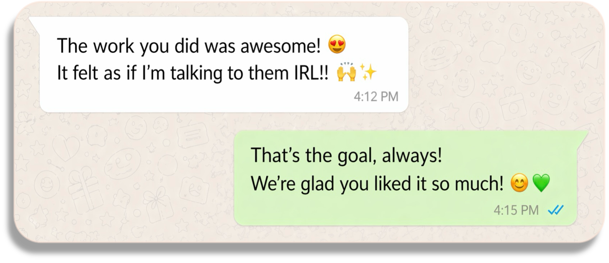

01Share
You share photos, voice notes, and the brief — anything that helps us remember them.
A personal, private message from the ones who can't be there for your wedding, your birthday, or any occasion that matters.
The three pieces below are shared with the families' written permission. Everything else lives only with the people it was made for. That is the point.
If you'd like to see more, we'll walk you through examples on the call — many with details we don't publish here.
Book a private call→This isn’t automation. It’s something carefully crafted, guided by your intent.
Each memory is worked on individually — by someone who understands the weight of what you're creating.
No templates · No mass generation · No shortcuts






Start your memory today, and we'll take care of the rest.
Choose whichever feels easiest. We'll reply the same way you reach out.